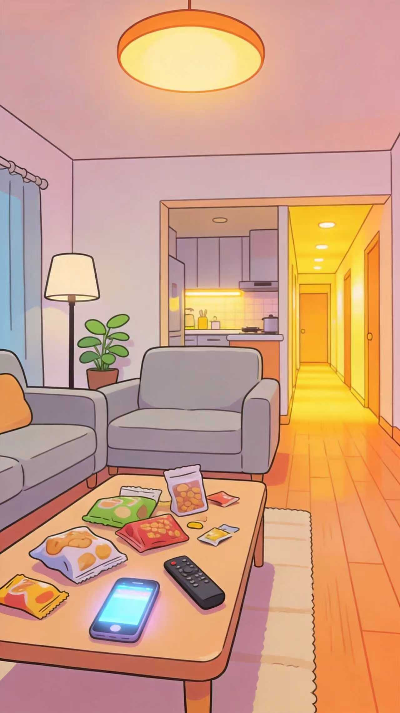
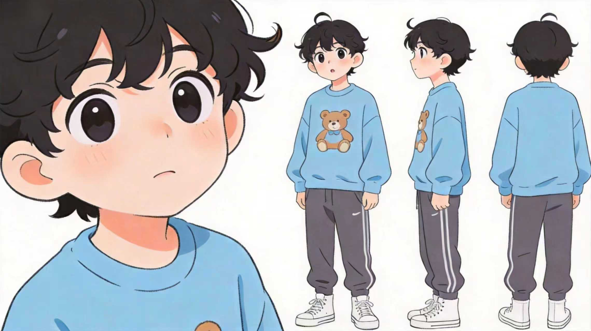
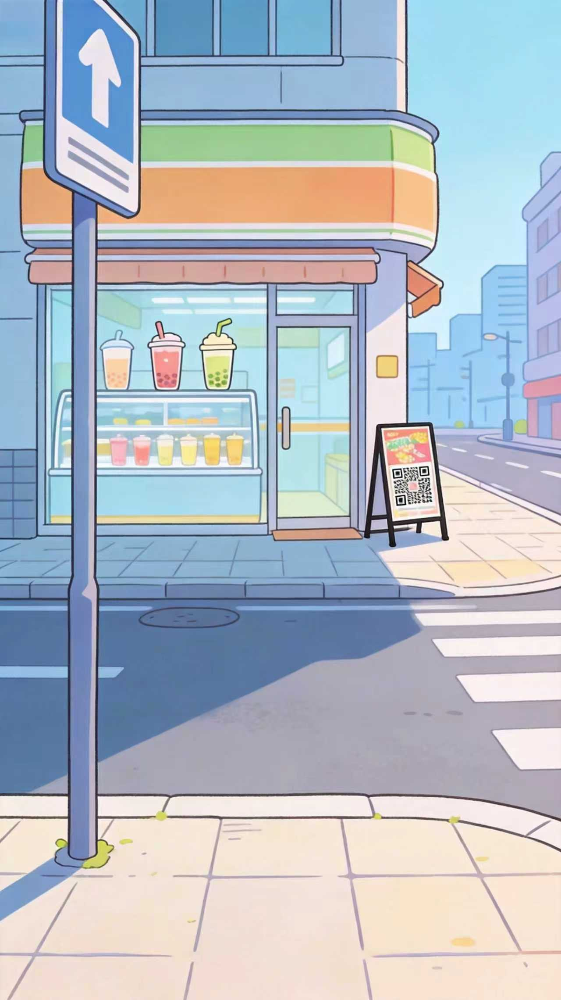
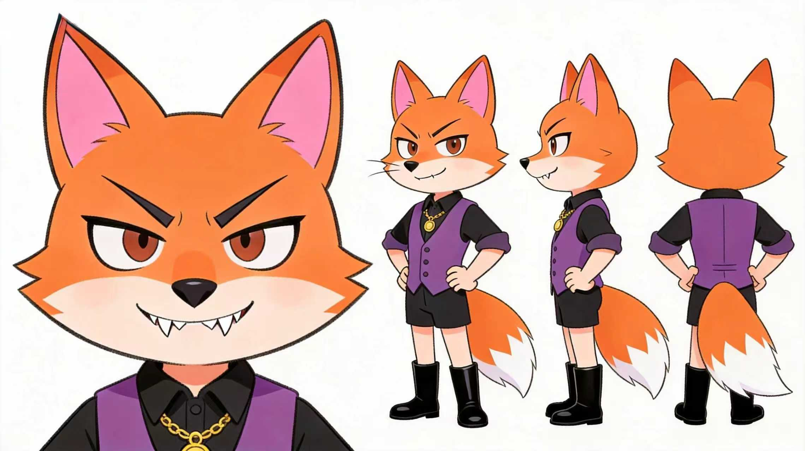

正视图
蓝色小熊卫衣、圆眼睛、清醒表情
片名：《全民反诈守护》
集数：EP01（本次交付）
场次：S01-01 不明二维码不扫描
[画面] 暖黄客厅里，小呆刷手机时收到红包链接，指尖悬停瞬间弹出蓝色盾牌气泡。
[台词] 小呆：不对！陌生链接不乱点！
[动作] 小呆收回手并锁屏，随后转场到街角奶茶店，被“扫码领红包”广告牌吸引。
[音效] 手机提示音 + 轻快漫画节奏 + 结尾反诈口诀旁白。
[转场] 手机亮屏 Match Cut 至奶茶店二维码广告牌。
[导演备注] 本段重心是“陌生链接不乱点 + 不明二维码不扫描”，提示语保持短促好记。
角色名：小呆
定位：主角 / 呆萌小男孩 / 儿童反诈学习线
身份：蓝色小熊卫衣男孩 气质：好奇、可爱、关键时刻清醒
外观关键词：黑色卷发、蓝色小熊卫衣、圆眼睛、清新漫画线条
蓝色小熊卫衣、圆眼睛、清醒表情
拿手机停顿、收回手、锁屏动作
离开奶茶店的背影与摆手动作
犹豫、警觉、坚定拒绝的表演角度
小呆是一个好奇心很强的孩子，容易被红包、福利和新鲜提示吸引。遇到陌生链接时，他会先被诱惑， 但在盾牌气泡和自我提醒出现后立刻停手；面对奶茶店门口的不明二维码，他也能在扫码前一秒清醒拒绝。
主服装：蓝色小熊卫衣 + 深色运动裤 + 白色鞋子
关键道具：手机、红包链接、蓝色盾牌气泡、扫码领红包广告牌
统一规则：所有镜头突出陌生链接、不明二维码、拒绝扫码和反诈口诀
景别/角度：俯拍 / 客厅缓推
画面：小呆在暖黄客厅刷手机，红包图标弹出，盾牌气泡提醒他停手。
运镜：俯拍缓推进入客厅，快速推近手机屏幕，再切到小呆清醒摇头。
台词/音效：“不对！陌生链接不乱点！”；手机提示音轻响。
转场：锁屏动作 Match Cut 到镜头 02。
景别/角度：低角度跟拍 / 街道转场
画面：小呆从客厅出门来到街角奶茶店，诈骗精从广告牌后探头诱导扫码。
运镜：低角度跟拍起身出门，滑动转场至奶茶店，定格广告牌和诈骗精探头动作。
台词/音效：“用手机扫一下，红包秒到账～”；小呆重复：“用手机扫一下……”
转场：广告牌二维码擦切至手机屏幕特写。
景别/角度：手机特写 / 急速拉远
画面：手机即将识别二维码，小呆突然警觉，收回手机并锁屏，诈骗精当场崩溃。
运镜：手机屏幕特写对准二维码，随后急速拉远并轻微晃动。
台词/音效：“停！不明二维码不扫描！”；“啊——我的业绩！”
转场：诈骗精崩溃动作硬切至阳光收束镜头。
景别/角度：仰拍 / 背影慢推
画面：小呆摆手离开，诈骗精泄气滚出画面，彩色反诈标语从天而降。
运镜：仰拍小呆背影慢推，再上摇至天空，定格在反诈提醒画面。
台词/音效：旁白：“反诈口诀刻心里，守住钱袋笑嘻嘻！”
转场：定格为最终成片收束画面。
已从“不明二维码不扫描”分镜 01-04 自动汇总为生成流水线。可在中间节点选择转场衔接策略。
小呆、诈骗精、客厅、奶茶店与二维码广告牌同步入列
四段竖屏分镜、反诈口诀旁白和安全提醒合成为预览成片
当前衔接策略：Match Cut
预计输出：竖屏预览版 / 时长约 00:31

红包链接与扫码诱导四段式结构

蓝色小熊卫衣与警觉表演参考

扫码广告牌与街道转场氛围

紫色马甲狐狸反派表演参考
四段式儿童反诈短视频模板
当前阶段资产背包